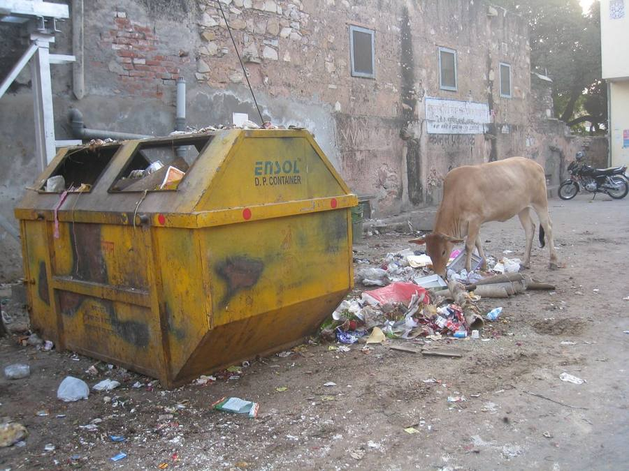

Every lane of Kardhani, collected in one morning shift.
Five twin-compartment e-hoppers drive their GIS-designed beats on Kardhani's actual OpenStreetMap street network. Wet waste goes to the Ward Resource Centre for composting, dry waste goes to the kabadi co-op, and only the residual leaves the ward.
Kardhani, before and after
All figures come from the design calculations in the project report: the Worrell & Vesilind fleet equations, CPHEEO composition and the OSM network analysis.
MSW generated in Ward 44 (16,565 people × 0.45 kg + 20 % commercial)
Swachhtam Portal 2024 · CPHEEOdiverted from disposal, up from about 8 % today
compost + recycling + inert reuseless waste leaves the ward: 6.7 → 2.6 t/day, 141 → 56 t-km of hauling
Sewapura ≈ 21 km by roadpayback on ₹89 lakh capital, from a net benefit of ₹45.5 lakh a year
compost · recyclables · user chargeWhere every tonne goes
The existing split assigns collected waste in proportion to Jaipur's city capacities (NGT order, 16 July 2024; Langariyawas WtE, 2025). The proposed split comes from the design capture rates: 80 % wet, 70 % dry, 60 % inert.
Six e-hoppers, two compartments each
Each compartment fills as its hopper works the beat: wet holds 1.2 m³ (480 kg) and dry holds 1.8 m³ (234 kg). A hopper unloads at the Ward Resource Centre three times per shift.
Kaunsa Dabba? Ask the AI
Take a photo of a waste item. A CNN I trained (MobileNetV2 with transfer learning, 12 waste classes) tells you which bin it goes in. The model runs inside your browser, so the photo never leaves your device.
Trained on the public Garbage Classification dataset (12 classes, 15,520 images). It has not seen Jaipur street photos, so cluttered scenes can confuse it.
Kardhani Litter Vision
A ₹3,000 dash-cam on each hopper photographs every lane it drives. An object detector flags litter, overflowing containers and stray cattle, and each flag becomes a geotagged hotspot for the next morning's sweep.

26.9531 N, 75.7066 E · 4 detections
- Overflowing secondary container0.96
- Stray cattle at waste0.94
- Mixed waste pile (GVP)0.91
- Plastic carry bag0.87
- Multilayer snack packet0.82
Illustrative demo: the boxes are hand-annotated on a real Jaipur photograph ("Cow eating garbage in Jaipur", Christian Haugen, CC BY 2.0), not live model output.
Report a problem in Kardhani
Report a missed pickup, a dump spot or burning. Your pin goes on the map above and is routed to the hopper for that beat.
One card per house, one score per lane
The crew scans each house's card at pickup, which logs whether waste was segregated. Jaipur is already tendering RFID tags for households; this card links each tag to a segregation score and a user-charge rebate. Hover or tap to flip it.
26 of 28 pickups segregated this month
Three bins, sized by calculation
For a five-person household producing 2.25 kg/day: wet 1.125 kg/day at 300 kg/m³ with 100 % freeboard gives 7.5 L, so a 10 L green bin. Dry 0.56 kg/day held two days at 100 kg/m³ gives 14 L, so a 15 L blue bin. A red box takes domestic hazardous and sanitary waste, as the SWM Rules 2016 require.
| Beat | Street km | Customers | Segregation (pilot target) |
|---|
Street km and customers come from the OSM network analysis. Segregation figures are illustrative targets for the proposed pilot.